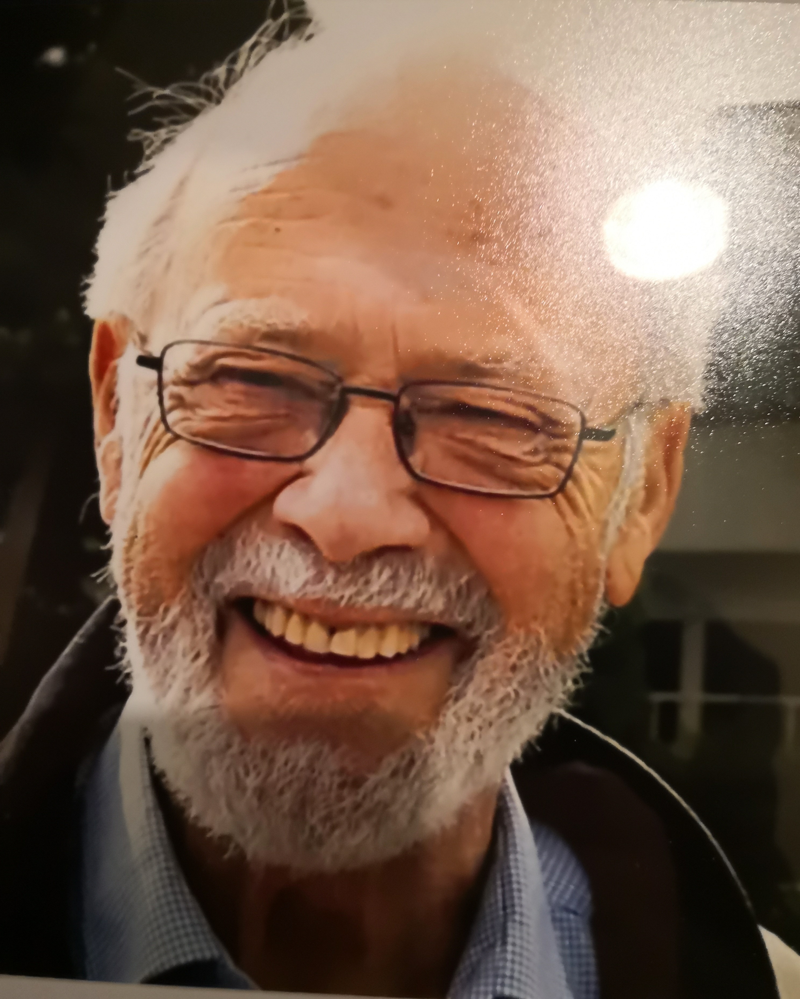

Det har vært langt mellom Statsråder fra Sørlandet i nyere tid. Av stor betydning for oss på Utdanningssektoren kan man likevel skilte med Victor Norman. Administrasjonsminister, H 2001 til 2004, død 2024, og kunnskapsministrene Jon Lilletun KRF 1997 til 2000, død 2006, og Tore Austad H 1981 til 1983. Nå gikk Tore også bort. 21. januar og ble bisatt den 31. Han og våre andre, tillagt Bent Røiseland V 1902 til 81, vår lengstvirkende Parlamentariker, Statsministeren vi ikke fikk, er nå dypt savnet.
Tore Austad vokste opp som enebarn, en tid også på barnehjem, i Skedsmo, og flyttet til Kristiansand og tok artium ved Katedralskolen. Så ble det befalskurs i marinen og et par års tjeneste med opprykk til løytnant på KNM Bergen, en av jagerne Norge hadde overtatt fra US Navy. Tore yndet å fortelle om at han som forsyningsoffiser på tokt i Storbritannia, uforvarende mottok en tønne rom slik man var vant til hos Royal Navy. Mottaket var ikke upopulært om bord (!) I sine siste år på Strømmetunet Omsorgssenter i Randesund kunne han også si mye annet pussig som å sitere Ronald Reagens yndlingsvits som at i Himmelen er det reservert mange små spartanske rom for de mange prester. Mens herskapsboliger ble bare tildelt politikere for av dem var det nesten ingen der (!). Likevel imøteså han som Presidenten et opphold der med frimodighet. Tidligere i livet satt Tore gjerne på galleriet i Oddernes Kirke når den da så populære sokneprest Sverre Olsen talte.

Gjennom karrieren delte Tore Austad livet mellom Stortinget. Bystyret i Kristiansand og sin elskede Katedralskole Alle steder gjorde denne mentoren av en mann en formidabel innsats. I pakt med Høyres filosofi i hans lange politikertid ønsket han å reformere for å bevare. Fremfor alt ønsket han En skole for alle og skrev bok om dette og om Mål og virkemidler i skolen. Intelligent, saklig og vennlig som han alltid var, var han en kløpper til å skape oppslutning over partigrenser om å gjennomføre mål i og for Kåre Willochs Regjering og i Kristiansand Bystyre. Ifølge tidligere ordfører Harald Furre i Minnestunden, dagens leder av Agder Høyre, aller mest om å skape Sørlandets Kompetansefond, Stiftelsen Cultiva og Kilden Teater og Konserthus.
Austad var en kulturpersonlighet og spennende foreleser ved Agder Distriktshøgskole i den viktige forsøksfasen fra 1969 til 1974, ved University of Chicago som visiting professor, og verdifullt medlem og en tid også akademisekretær, for Agder Vitenskapsakademi. Et akademi som i dag har 300 professorer, og kulturpersonligheter fra inn- og utland som medlemmer. Han var gift med tidligere avdøde Inger Semb Austad, datter av meriterte rektor Semb ved Maskinistskolen, og gledet seg veldig over å ha sønnene Bård, Håvard og Tore Ingar, svigerdatteren Marianne og seks barnebarn og syv oldebarn. Som mange ofte besøkte han og som han forte med både seriøse og ville naturistiske og humane historier som alle hadde til hensikt å inspirere.
Thor Einar Hanisch, Agder Vitenskapsakademi og em. UiA